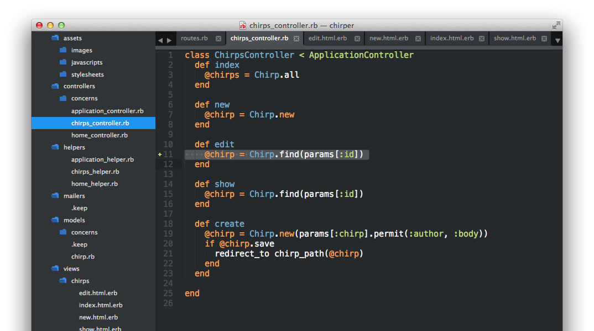
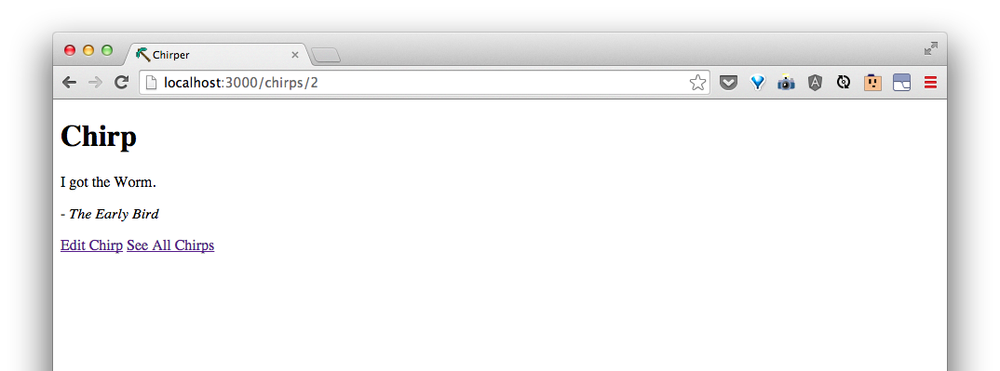

Edit an existing chirp
What if we want to edit a chirp?
| URI Pattern | Controller#Action | What should it do? | Example action code |
|---|---|---|---|
| /chirps/:id/edit(.:format) | chirps#edit | Show a form for editing an existing chirp | Chirp.find(id) |
| /chirps/:id(.:format) | chirps#update | Update a specific chirp based based on input from the form | Chirp.find(id).update(body: 'a body') |
As with showing a specific chirp, our editing form needs to get the information for a specific Chirp. We can tell our chirps#edit action to do the same thing as our chirps#show action by adding this line to the edit action:
@chirp = Chirp.find(params[:id])
Now, our app/controllers/chirps_controller.rb show look like this:

And in app/views/chirps/edit.html.erb, let's make a form using the existing chirp's information:
<h1>Edit this Chirp</h1>
<%= form_for @chirp do |f| %>
<div>
<%= f.label :author %>
<%= f.text_field :author %>
</div>
<div>
<%= f.label :body %>
<%= f.text_area :body %>
</div>
<div>
<%= f.submit 'Save' %>
</div>
<% end %>
Now, if we go to the edit page of a chirp, like the one at http://localhost:3000/chirps/2/edit, we should see something like:

When we try to edit and save, we get an error:

We have to make a chirps#update action, one that will find the chirp we're trying to edit and update it. We can make this by adding:
def update
@chirp = Chirp.find(params[:id])
if @chirp.update(params[:chirp].permit(:author, :body))
redirect_to chirp_path(@chirp)
else
render 'edit'
end
end
Now, when we make a change and update, we'll see:

Great! Let's add a link on the show chirp page so we can easily get to the edit page when we want to. In app/views/chirps/show.html.erb, add:
<%= link_to "Edit this Chirp", edit_chirp_path(@chirp) %>
Now, when showing a Chirp, http://localhost:3000/chirps/2 has a link for us to edit the chirp.

Review with your coach what we did with editing a chirp.